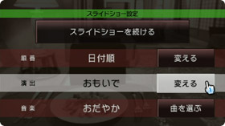
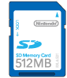
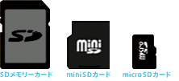
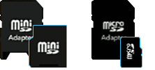
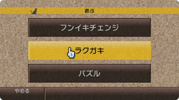

|
| クリスマス、冬休み、お正月... イベントの多い年末年始は、デジカメや携帯電話で家族や友人と一緒に写真を撮る機会も多かったのではないでしょうか。でも、その写真、「プリントアウトがめんどくさい」、「データの整理がめんどくさい」といって、撮ったままにしていませんか？ Ｗｉｉに搭載された『写真チャンネル』なら、プリントアウトやデータの整理をしなくても、手軽にみんなで写真を楽しむことができるんです。写真の新しい楽しみ方が見つかるかもしれませんよ。 |
まずは、難しいことは抜きにして上の動画を見てください。 思い出の写真が次々とテレビ画面の上に現れては消えていきます。バックグラウンドでは、写真に合った音楽が流れて… この動画は、『写真チャンネル』の「スライドショー」の様子を録画したものです。 『写真チャンネル』では、Ｗｉｉ本体に写真の入ったＳＤメモリーカードを差し込むだけで、こんな「スライドショー」をその場ですぐに楽しむことができるんです。 友達同士で集まったらこの前の旅行の写真のスライドショーで、親戚みんなで集まったら自慢の子供たちの写真をスライドショーで。テレビに表示されるので、みんなで一緒に思い出の写真が見られるというのがいいですね。 複雑なファイル管理なんかは必要ありません。デジカメや携帯電話から取り出したＳＤメモリーカードをとにかく、Ｗｉｉに差し込んでみてください。あっという間に楽しめてしまう、このスライドショー機能。いままで写真に縁がなかった人もぜひ試してみてください。 |
|
『写真チャンネル』のスライドショーでは、写真の内容やその日の気分に合わせて、演出や音楽などをいくつかの候補のなかから選ぶこともできます。これが思っていた以上に効果的。演出の「ドラマチック」などは写真の一部分を大胆にアップで映していくカメラワークなので、写真の魅力がさらにアップ！ またＢＧＭに自分の好きな曲を選ぶこともできます。やり方はやはり簡単でMP3形式（※１）の音楽ファイルを写真ファイルといっしょにＳＤメモリーカードに入れておけば大丈夫。音楽ファイルは最大100曲まで読み込めるので、長時間楽しむときにも困りません。 |
||
|

※１ 2007年12月より写真チャンネルの機能が変更され、再生可能な音楽ファイルがAAC形式になります。詳しくはこちら。
|
||
|

ＳＤメモリーカードはデジカメの写真などのデジタルデータを記憶するためのカードです。こんな形をしたカード、見覚えありませんか？ デジタルカメラや携帯電話で広く採用されているので、「ＳＤメモリーカードって何？」という方でも、ひょっとすると対応した携帯電話をお持ちかもしれないですよ。 |
|||
|  | ＳＤメモリーカードには、普通サイズのメモリーカードのほかに、より小さなｍｉｎｉＳＤカードやｍｉｃｒｏＳＤカードがあります。 （携帯電話などではこういった小さなカードがよく使われます。） |
||
|  | ｍｉｎｉＳＤカードやｍｉｃｒｏＳＤカードでも、対応したアダプタを取り付けることによって、Ｗｉｉでも使うことができます。 | ||
| ※一部のＳＤメモリーカードはＷｉｉに対応していない可能性があります。 | |||
| それぞれの写真を開いているときに「遊ぶ」を選べば、３つの写真を使った遊び方を試せます。 |
|
||||||||

| さらに、これらの機能は動画でも使用できるんです。「パズル」なら、分割された動画をつなぎ合わせるので、難易度が一気にアップ。「フンイキチェンジ」は音声の雰囲気もいっしょに変えてくれるのが楽しいですよ。 |
| スライドショーのなにがいいって、写真の切り替えを任せておけるので、画面をみながらゆったりとしていると、周囲にいる人間との会話が弾むことです。でも、このときリモコンを使って場を盛り上げることもできます。 もし近くにＷｉｉリモコンがあったら、スライドショー中に画面にＷｉｉリモコンを向けて、十字ボタンの下を押してみてください。ちょっとだけ怪しい雰囲気の写真に周りの皆さんが驚くことうけあいです。 |
| 『写真チャンネル』の操作でＳＤメモリーカード内の各種データが書き換えられたり、消去してしまったりすることはありません。パソコンは、データを壊してしまいそうでちょっと…という方でも安心してお楽しみいただけますよ。 でも、お子さんの傑作ラクガキなんかは残したいですよね？ そんなときは残したい写真が表示されているときに「はる」を選んでＷｉｉ伝言板へ写真を保存するといいかも。そのままフレンド登録した他のＷｉｉへ送ることもできます。 ※ＷｉｉからＷｉｉ以外の機器へ画像の送信はできません。 |
| 実は、『写真チャンネル』のヒミツの機能は、まだまだ、隠されています。今回のN.O.Mでご紹介するのはここまで。 もし新しい楽しみ方を知りたくなったら、『写真チャンネル』のどこかに現れる黒猫を探してみてください。リモコンで黒猫をポイントした状態でＡボタンを押せば、黒猫をつかまえることができます。つかまえた黒猫からは色々なアドバイスを聞けるとか。アドバイスはつかまえるたびに、内容も変わっていくみたいですよ。 |
|  |
| 黒猫はすぐに画面から逃げようとするので、よく注意して画面を見ていてくださいね。 （逃げてしまった猫もちょっと待っていると戻ってきますよ。） |
| 前のページへ 次のページへ |
N.O.M１月号のトップページへ |